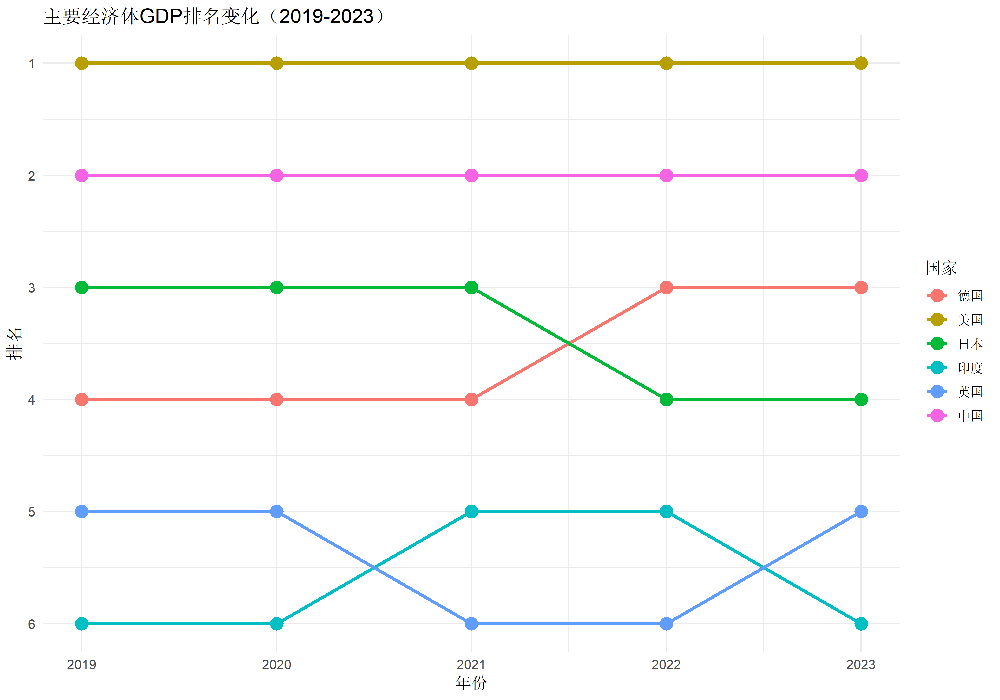
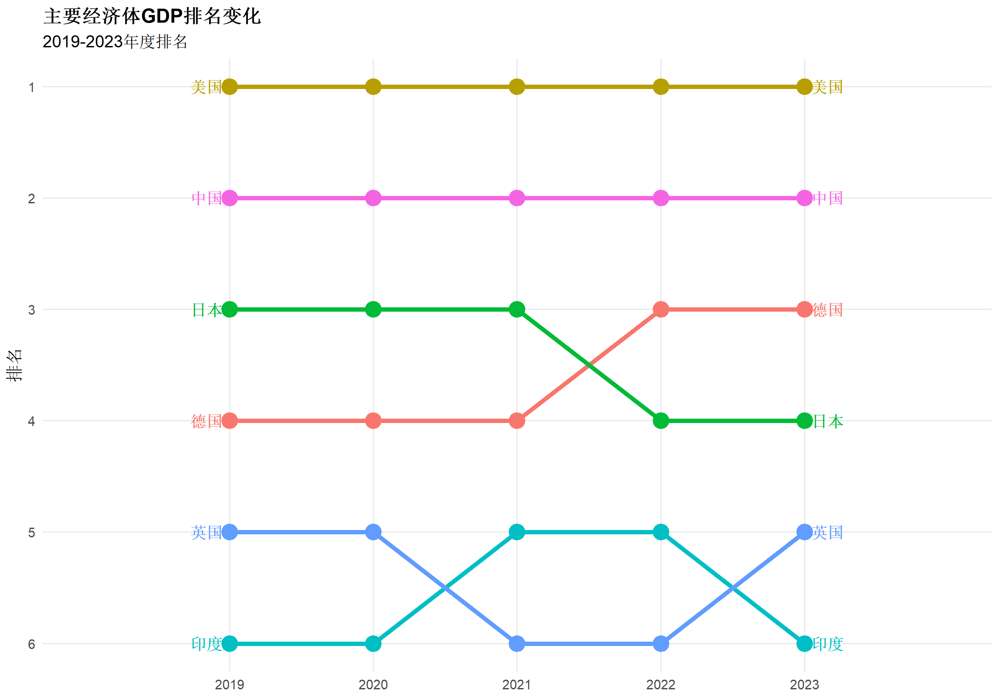
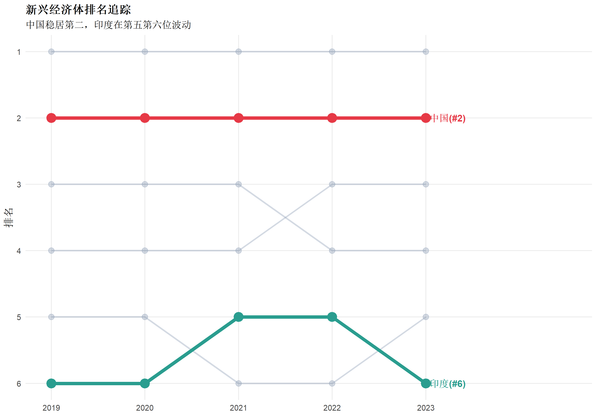
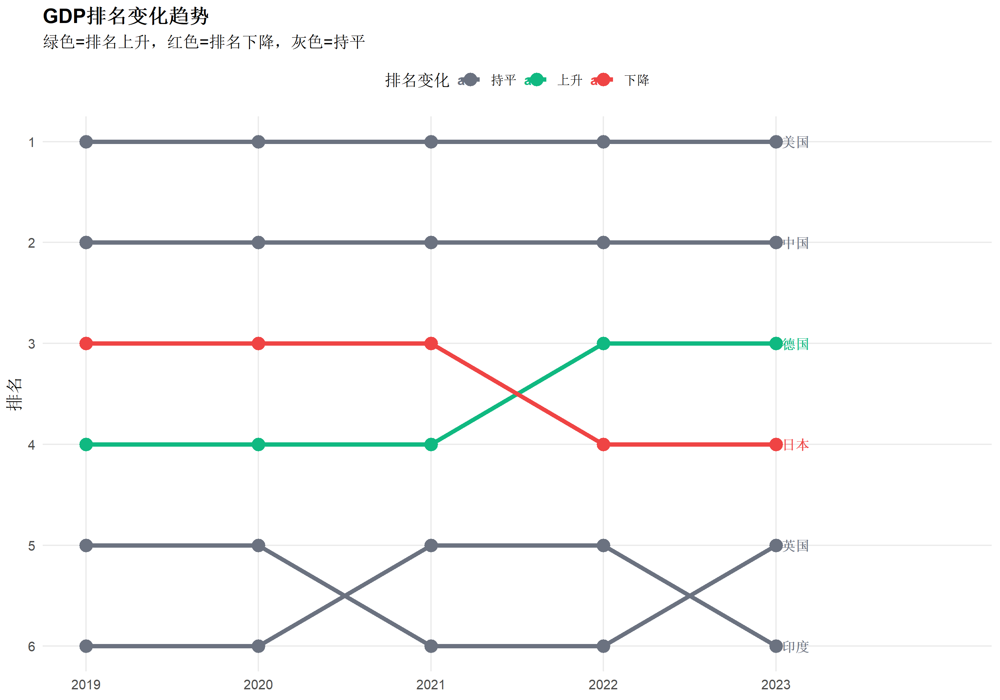
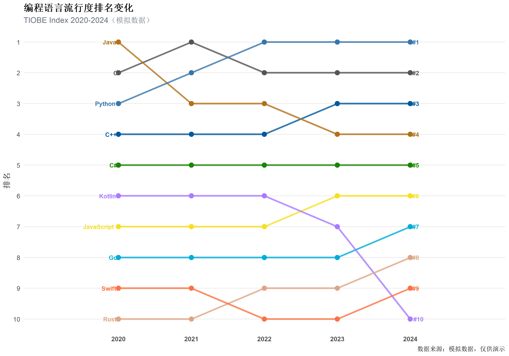
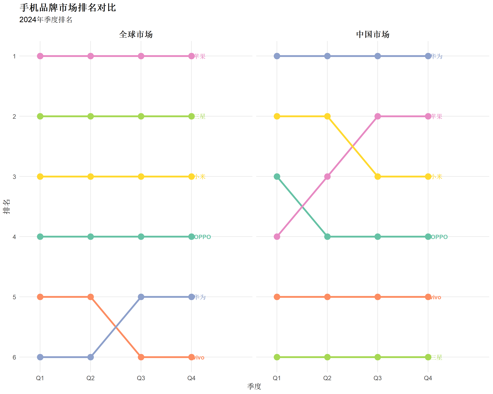
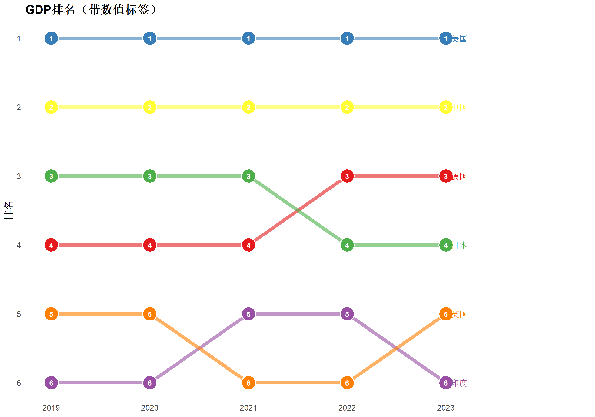
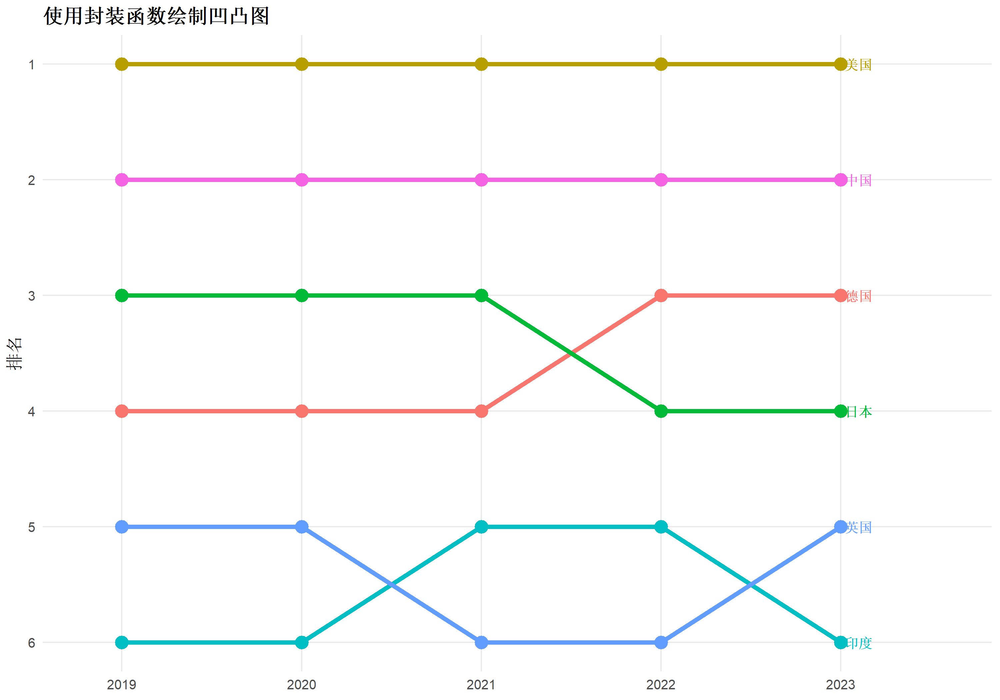
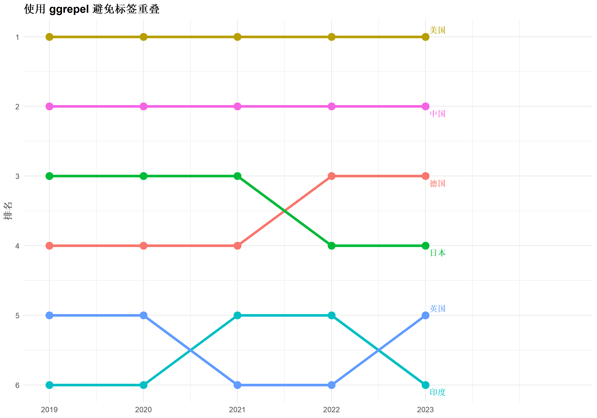

library(ggplot2)
library(dplyr)
library(tidyr)
library(forcats)
library(scales)R语言凹凸图（排名变化图）绘制
数据可视化
排名图
时间序列
什么是凹凸图
凹凸图（Bump Chart）是一种专门用于展示排名随时间变化的可视化方式。图表中每条线代表一个实体（如国家、品牌、选手），Y轴表示排名位置，X轴表示时间点，线条的起伏直观反映了排名的升降变化。
与普通折线图不同，凹凸图的Y轴是离散的排名而非连续数值。这种设计使得：
- 排名第一的实体始终位于图表顶部
- 排名变化（上升/下降）一目了然
- 多个实体的相对位置变化清晰可比
凹凸图的名称来源于线条在排名变化时形成的”凹凸”形态——当某实体排名上升时，其线条向上凸起；排名下降时，线条向下凹陷。
适用场景
凹凸图特别适合以下分析场景：
| 场景 | 说明 | 典型案例 |
|---|---|---|
| 竞赛排名 | 多轮比赛中选手/队伍排名变化 | F1赛季积分榜、世界杯小组赛 |
| 市场份额 | 品牌/产品市场地位变迁 | 手机品牌季度排名、APP下载榜 |
| 学术排名 | 大学/期刊排名年度变化 | QS世界大学排名、影响因子排行 |
| 经济指标 | 国家/地区经济指标排位 | GDP排名、人均收入排名 |
| 销售业绩 | 销售人员/区域业绩排名 | 月度销冠、区域绩效排名 |
何时不适合使用凹凸图
- 实体数量过多（>15个）：线条交叉过于密集，难以追踪
- 时间点过少（<3个）：无法展示变化趋势，哑铃图更合适
- 关注绝对数值：凹凸图只显示排名，不体现数值差距
- 排名无变化：所有线条平行，无信息量
R包加载
可选使用 ggbump 包获得更平滑的曲线效果：
# install.packages("ggbump")
library(ggbump)数据结构要求
凹凸图所需数据必须包含三个核心变量：
| 变量 | 类型 | 说明 |
|---|---|---|
| 实体标识 | 字符/因子 | 被排名的对象（如国家名、品牌名） |
| 时间点 | 数值/因子 | 排名的时间维度（如年份、轮次） |
| 排名 | 整数 | 该时间点的排名位置（1为最高） |
数据应为长格式（long format），每行代表一个实体在某时间点的排名。
准备示例数据
以下创建一个模拟数据集，展示6个主要经济体在5年间的GDP排名变化：
set.seed(42)
# 创建GDP排名数据
gdp_ranking <- data.frame(
country = rep(c("美国", "中国", "日本", "德国", "英国", "印度"), each = 5),
year = rep(2019:2023, 6),
rank = c(
1, 1, 1, 1, 1, # 美国：稳居第一
2, 2, 2, 2, 2, # 中国：稳居第二
3, 3, 3, 4, 4, # 日本：被德国超越
4, 4, 4, 3, 3, # 德国：超越日本
5, 5, 6, 6, 5, # 英国：波动
6, 6, 5, 5, 6 # 印度：波动
)
)
# 查看数据结构
head(gdp_ranking, 12) country year rank
1 美国 2019 1
2 美国 2020 1
3 美国 2021 1
4 美国 2022 1
5 美国 2023 1
6 中国 2019 2
7 中国 2020 2
8 中国 2021 2
9 中国 2022 2
10 中国 2023 2
11 日本 2019 3
12 日本 2020 3基础凹凸图
使用 geom_line() + geom_point()
最基础的凹凸图使用折线连接各时间点的排名：
ggplot(gdp_ranking, aes(x = year, y = rank, color = country, group = country)) +
geom_line(linewidth = 1.2) +
geom_point(size = 4) +
scale_y_reverse(breaks = 1:6) +
labs(
title = "主要经济体GDP排名变化（2019-2023）",
x = "年份",
y = "排名",
color = "国家"
) +
theme_minimal(base_size = 12)
代码解析
aes(x = year, y = rank, color = country, group = country)：X轴为年份，Y轴为排名，按国家分组着色geom_line(linewidth = 1.2)：绘制连接线，线宽1.2geom_point(size = 4)：在每个数据点绘制圆点scale_y_reverse(breaks = 1:6)：关键步骤——反转Y轴使排名第一在最上方
添加端点标签
凹凸图的一个重要设计原则是在线条端点添加标签，便于识别每条线代表的实体：
ggplot(gdp_ranking, aes(x = year, y = rank, color = country, group = country)) +
geom_line(linewidth = 1.5) +
geom_point(size = 5) +
# 左侧标签（起始年份）
geom_text(
data = gdp_ranking %>% filter(year == min(year)),
aes(label = country),
hjust = 1.2,
size = 4,
fontface = "bold"
) +
# 右侧标签（结束年份）
geom_text(
data = gdp_ranking %>% filter(year == max(year)),
aes(label = country),
hjust = -0.2,
size = 4,
fontface = "bold"
) +
scale_y_reverse(breaks = 1:6) +
scale_x_continuous(
breaks = 2019:2023,
limits = c(2018, 2024) # 扩展X轴为标签留空间
) +
labs(
title = "主要经济体GDP排名变化",
subtitle = "2019-2023年度排名",
x = NULL,
y = "排名"
) +
theme_minimal(base_size = 12) +
theme(
legend.position = "none", # 隐藏图例（标签已替代）
panel.grid.minor = element_blank(),
plot.title = element_text(face = "bold", size = 14)
)
使用 ggbump 包
ggbump 包提供了 geom_bump() 函数，可以绘制更平滑的S形曲线，视觉效果更佳：
if (requireNamespace("ggbump", quietly = TRUE)) {
library(ggbump)
ggplot(gdp_ranking, aes(x = year, y = rank, color = country)) +
geom_bump(linewidth = 1.5, smooth = 8) +
geom_point(size = 5) +
geom_text(
data = gdp_ranking %>% filter(year == min(year)),
aes(label = country),
hjust = 1.2,
size = 4,
fontface = "bold"
) +
geom_text(
data = gdp_ranking %>% filter(year == max(year)),
aes(label = country),
hjust = -0.2,
size = 4,
fontface = "bold"
) +
scale_y_reverse(breaks = 1:6) +
scale_x_continuous(breaks = 2019:2023, limits = c(2018, 2024)) +
scale_color_brewer(palette = "Set2") +
labs(
title = "GDP排名变化（ggbump平滑曲线）",
x = NULL,
y = "排名"
) +
theme_minimal(base_size = 12) +
theme(
legend.position = "none",
panel.grid.minor = element_blank(),
plot.title = element_text(face = "bold")
)
} else {
message("请安装 ggbump 包获得平滑曲线效果: install.packages('ggbump')")
}geom_bump vs geom_line
| 特性 | geom_line | geom_bump |
|---|---|---|
| 连接方式 | 直线段 | S形平滑曲线 |
| 视觉效果 | 锐利、精确 | 柔和、流畅 |
| 适用场景 | 强调精确排名点 | 强调变化趋势 |
| 依赖包 | ggplot2（内置） | ggbump（需安装） |
突出特定实体
当实体较多时，可以通过颜色和透明度突出关注的对象：
# 标记关注的国家
highlight_countries <- c("中国", "印度")
gdp_ranking <- gdp_ranking %>%
mutate(
highlight = country %in% highlight_countries,
alpha_val = ifelse(highlight, 1, 0.3)
)
ggplot(gdp_ranking, aes(x = year, y = rank, group = country)) +
# 背景线（非关注国家）
geom_line(
data = gdp_ranking %>% filter(!highlight),
color = "#94a3b8",
linewidth = 1,
alpha = 0.4
) +
geom_point(
data = gdp_ranking %>% filter(!highlight),
color = "#94a3b8",
size = 3,
alpha = 0.4
) +
# 前景线（关注国家）
geom_line(
data = gdp_ranking %>% filter(highlight),
aes(color = country),
linewidth = 2
) +
geom_point(
data = gdp_ranking %>% filter(highlight),
aes(color = country),
size = 5
) +
# 关注国家标签
geom_text(
data = gdp_ranking %>% filter(year == max(year) & highlight),
aes(label = paste(country, "(#", rank, ")", sep = ""), color = country),
hjust = -0.1,
size = 4,
fontface = "bold"
) +
scale_y_reverse(breaks = 1:6) +
scale_x_continuous(breaks = 2019:2023, limits = c(2019, 2024.5)) +
scale_color_manual(values = c("中国" = "#e63946", "印度" = "#2a9d8f")) +
labs(
title = "新兴经济体排名追踪",
subtitle = "中国稳居第二，印度在第五第六位波动",
x = NULL,
y = "排名"
) +
theme_minimal(base_size = 12) +
theme(
legend.position = "none",
panel.grid.minor = element_blank(),
plot.title = element_text(face = "bold", size = 14)
)
配色方案
按排名变化着色
根据起止排名的变化方向设置颜色：
# 计算排名变化
gdp_summary <- gdp_ranking %>%
group_by(country) %>%
summarise(
start_rank = rank[year == min(year)],
end_rank = rank[year == max(year)],
change = start_rank - end_rank, # 正值表示排名上升
.groups = "drop"
) %>%
mutate(
trend = case_when(
change > 0 ~ "上升",
change < 0 ~ "下降",
TRUE ~ "持平"
)
)
# 合并到原数据
gdp_ranking <- gdp_ranking %>%
left_join(gdp_summary %>% select(country, trend), by = "country")
ggplot(gdp_ranking, aes(x = year, y = rank, color = trend, group = country)) +
geom_line(linewidth = 1.5) +
geom_point(size = 4) +
geom_text(
data = gdp_ranking %>% filter(year == max(year)),
aes(label = country),
hjust = -0.2,
size = 3.5,
fontface = "bold"
) +
scale_y_reverse(breaks = 1:6) +
scale_x_continuous(breaks = 2019:2023, limits = c(2019, 2024)) +
scale_color_manual(
values = c("上升" = "#10b981", "下降" = "#ef4444", "持平" = "#6b7280"),
name = "排名变化"
) +
labs(
title = "GDP排名变化趋势",
subtitle = "绿色=排名上升，红色=排名下降，灰色=持平",
x = NULL,
y = "排名"
) +
theme_minimal(base_size = 12) +
theme(
legend.position = "top",
panel.grid.minor = element_blank(),
plot.title = element_text(face = "bold")
)
实际案例：编程语言流行度排名
以下使用更真实的数据展示编程语言在TIOBE指数中的排名变化：
# TIOBE编程语言排名数据（模拟）
tiobe_data <- data.frame(
language = rep(c("Python", "C", "C++", "Java", "C#",
"JavaScript", "Go", "Rust", "Swift", "Kotlin"), each = 5),
year = rep(2020:2024, 10),
rank = c(
3, 2, 1, 1, 1, # Python: 快速上升至第一
2, 1, 2, 2, 2, # C: 略有下滑
4, 4, 4, 3, 3, # C++: 稳步上升
1, 3, 3, 4, 4, # Java: 持续下滑
5, 5, 5, 5, 5, # C#: 稳定
7, 7, 7, 6, 6, # JavaScript: 小幅上升
8, 8, 8, 8, 7, # Go: 缓慢上升
10, 10, 9, 9, 8, # Rust: 稳步上升
9, 9, 10, 10, 9, # Swift: 波动
6, 6, 6, 7, 10 # Kotlin: 先稳后降
)
)
# 设置语言配色
lang_colors <- c(
"Python" = "#3776ab",
"C" = "#555555",
"C++" = "#00599c",
"Java" = "#b07219",
"C#" = "#178600",
"JavaScript" = "#f7df1e",
"Go" = "#00add8",
"Rust" = "#dea584",
"Swift" = "#fa7343",
"Kotlin" = "#a97bff"
)
ggplot(tiobe_data, aes(x = year, y = rank, color = language, group = language)) +
geom_line(linewidth = 1.2, alpha = 0.8) +
geom_point(size = 3) +
# 左侧标签
geom_text(
data = tiobe_data %>% filter(year == 2020),
aes(label = language),
hjust = 1.15,
size = 3,
fontface = "bold"
) +
# 右侧标签
geom_text(
data = tiobe_data %>% filter(year == 2024),
aes(label = paste0("#", rank)),
hjust = -0.3,
size = 3,
fontface = "bold"
) +
scale_y_reverse(breaks = 1:10) +
scale_x_continuous(
breaks = 2020:2024,
limits = c(2019, 2025)
) +
scale_color_manual(values = lang_colors) +
labs(
title = "编程语言流行度排名变化",
subtitle = "TIOBE Index 2020-2024（模拟数据）",
x = NULL,
y = "排名",
caption = "数据来源：模拟数据，仅供演示"
) +
theme_minimal(base_size = 11) +
theme(
legend.position = "none",
panel.grid.minor = element_blank(),
panel.grid.major.x = element_blank(),
plot.title = element_text(face = "bold", size = 14),
plot.subtitle = element_text(color = "#6b7280"),
axis.text.x = element_text(face = "bold")
)
分面凹凸图
当需要比较不同类别的排名变化时，可以使用分面：
# 创建分类排名数据
category_ranking <- data.frame(
item = rep(c("苹果", "华为", "小米", "三星", "OPPO", "vivo"), each = 4),
quarter = rep(c("Q1", "Q2", "Q3", "Q4"), 6),
quarter_num = rep(1:4, 6),
region = rep(c(rep("中国市场", 3), rep("中国市场", 3)), each = 4),
rank = c(
4, 3, 2, 2, # 苹果
1, 1, 1, 1, # 华为
2, 2, 3, 3, # 小米
6, 6, 6, 6, # 三星
3, 4, 4, 4, # OPPO
5, 5, 5, 5 # vivo
)
)
# 添加全球市场数据
global_ranking <- data.frame(
item = rep(c("苹果", "华为", "小米", "三星", "OPPO", "vivo"), each = 4),
quarter = rep(c("Q1", "Q2", "Q3", "Q4"), 6),
quarter_num = rep(1:4, 6),
region = "全球市场",
rank = c(
1, 1, 1, 1, # 苹果
6, 6, 5, 5, # 华为
3, 3, 3, 3, # 小米
2, 2, 2, 2, # 三星
4, 4, 4, 4, # OPPO
5, 5, 6, 6 # vivo
)
)
all_ranking <- bind_rows(category_ranking, global_ranking)
ggplot(all_ranking, aes(x = quarter_num, y = rank, color = item, group = item)) +
geom_line(linewidth = 1.3) +
geom_point(size = 4) +
geom_text(
data = all_ranking %>% filter(quarter == "Q4"),
aes(label = item),
hjust = -0.15,
size = 3,
fontface = "bold"
) +
facet_wrap(~region, ncol = 2) +
scale_y_reverse(breaks = 1:6) +
scale_x_continuous(
breaks = 1:4,
labels = c("Q1", "Q2", "Q3", "Q4"),
limits = c(0.8, 5)
) +
scale_color_brewer(palette = "Set2") +
labs(
title = "手机品牌市场排名对比",
subtitle = "2024年季度排名",
x = "季度",
y = "排名"
) +
theme_minimal(base_size = 11) +
theme(
legend.position = "none",
strip.text = element_text(face = "bold", size = 12),
panel.grid.minor = element_blank(),
plot.title = element_text(face = "bold", size = 14)
)
添加排名数值
在数据点上直接显示排名数字：
ggplot(gdp_ranking, aes(x = year, y = rank, color = country, group = country)) +
geom_line(linewidth = 2, alpha = 0.6) +
geom_point(size = 8, color = "white") +
geom_point(size = 7) +
geom_text(
aes(label = rank),
color = "white",
size = 3,
fontface = "bold"
) +
geom_text(
data = gdp_ranking %>% filter(year == max(year)),
aes(label = country),
hjust = -0.3,
size = 3.5,
fontface = "bold"
) +
scale_y_reverse(breaks = 1:6) +
scale_x_continuous(breaks = 2019:2023, limits = c(2019, 2024.2)) +
scale_color_brewer(palette = "Set1") +
labs(
title = "GDP排名（带数值标签）",
x = NULL,
y = "排名"
) +
theme_minimal(base_size = 12) +
theme(
legend.position = "none",
panel.grid = element_blank(),
plot.title = element_text(face = "bold")
)
封装实用函数
#' 绘制凹凸图
#' @param data 数据框
#' @param x_var 时间变量名
#' @param y_var 排名变量名
#' @param group_var 分组变量名
#' @param highlight 要突出的组（可选）
#' @param smooth 是否使用平滑曲线（需要ggbump包）
#' @param show_labels 是否显示端点标签
#' @param title 图表标题
plot_bump <- function(data, x_var, y_var, group_var,
highlight = NULL,
smooth = FALSE,
show_labels = TRUE,
title = NULL) {
# 基础图层
p <- ggplot(data, aes(
x = .data[[x_var]],
y = .data[[y_var]],
color = .data[[group_var]],
group = .data[[group_var]]
))
# 线条类型
if (smooth && requireNamespace("ggbump", quietly = TRUE)) {
p <- p + ggbump::geom_bump(linewidth = 1.5, smooth = 8)
} else {
p <- p + geom_line(linewidth = 1.5)
}
p <- p + geom_point(size = 4)
# 端点标签
if (show_labels) {
x_min <- min(data[[x_var]])
x_max <- max(data[[x_var]])
p <- p +
geom_text(
data = data %>% filter(.data[[x_var]] == x_max),
aes(label = .data[[group_var]]),
hjust = -0.15,
size = 3.5,
fontface = "bold"
)
}
# 样式设置
x_range <- range(data[[x_var]])
y_max <- max(data[[y_var]])
p <- p +
scale_y_reverse(breaks = 1:y_max) +
scale_x_continuous(
limits = c(x_range[1] - 0.2, x_range[2] + diff(x_range) * 0.15)
) +
labs(title = title, x = NULL, y = "排名") +
theme_minimal(base_size = 12) +
theme(
legend.position = "none",
panel.grid.minor = element_blank(),
plot.title = element_text(face = "bold")
)
return(p)
}
# 使用示例
plot_bump(
gdp_ranking,
x_var = "year",
y_var = "rank",
group_var = "country",
smooth = FALSE,
title = "使用封装函数绘制凹凸图"
)
常见问题与解决方案
问题1：线条交叉过于混乱
原因：实体数量过多或排名变化剧烈
解决方案： - 减少展示的实体数量（选择前N名或关注对象） - 使用透明度区分主次 - 分面展示不同类别
问题2：标签重叠
原因：多个实体在端点排名相同或相近
解决方案： - 使用 ggrepel::geom_text_repel() 自动避让 - 手动调整 vjust 偏移 - 仅显示一侧标签
# 使用 ggrepel 避免标签重叠
if (requireNamespace("ggrepel", quietly = TRUE)) {
library(ggrepel)
ggplot(gdp_ranking, aes(x = year, y = rank, color = country, group = country)) +
geom_line(linewidth = 1.5) +
geom_point(size = 4) +
geom_text_repel(
data = gdp_ranking %>% filter(year == max(year)),
aes(label = country),
direction = "y",
hjust = -0.2,
segment.size = 0.3,
size = 3.5,
fontface = "bold"
) +
scale_y_reverse(breaks = 1:6) +
scale_x_continuous(breaks = 2019:2023, limits = c(2019, 2024.5)) +
labs(title = "使用 ggrepel 避免标签重叠", x = NULL, y = "排名") +
theme_minimal() +
theme(legend.position = "none", plot.title = element_text(face = "bold"))
}
问题3：排名并列处理
当多个实体排名相同时，线条会完全重叠。解决方案：
# 添加微小抖动避免完全重叠
gdp_ranking_jitter <- gdp_ranking %>%
group_by(year) %>%
mutate(
rank_jitter = rank + (row_number() - mean(row_number())) * 0.1
) %>%
ungroup()总结
凹凸图核心要素
| 要素 | 说明 |
|---|---|
| Y轴反转 | scale_y_reverse() 使排名第一在顶部 |
| 端点标签 | 标识每条线代表的实体 |
| 颜色编码 | 区分不同实体或变化趋势 |
| 时间轴 | X轴展示排名观测时间点 |
设计建议
| 场景 | 建议 |
|---|---|
| 实体≤8个 | 全部展示，每个使用不同颜色 |
| 实体9-15个 | 突出重点，其余淡化处理 |
| 实体>15个 | 考虑分组或筛选前N名 |
| 时间点≤3个 | 考虑使用哑铃图替代 |
| 关注变化趋势 | 使用 ggbump 平滑曲线 |
| 关注精确排名 | 使用直线 + 数值标签 |